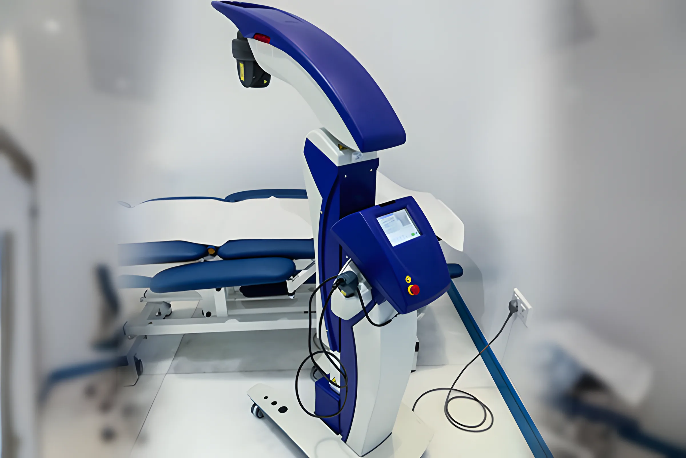

01
ليزر MLS الروبوتي
Multiwave Locked System
يرسل ليزر MLS طولين موجيين علاجيين في نفس الوقت، فيعالج الألم والالتهاب والتورم معاً، مع خطر منخفض لأي ضرر حراري على الجلد.

يساعد في
- عرق النسا وإصابات الرقبة والظهر
- الانزلاق الغضروفي وتآكل الغضاريف وتضيق القناة الشوكية
- التهاب المفاصل والجراب وخشونة الفقرات
- الالتواءات وإصابات العمل والرياضة
- مشاكل الركبة واللفافة الأخمصية
- مرفق التنس والغولف واعتلال الأعصاب
ماذا يفعل
- يخفف التورم والالتهاب
- يخفف الألم
- يسرّع التئام الأنسجة
- يحسّن الدورة الدموية ووظيفة الأعصاب
- بدون جراحة